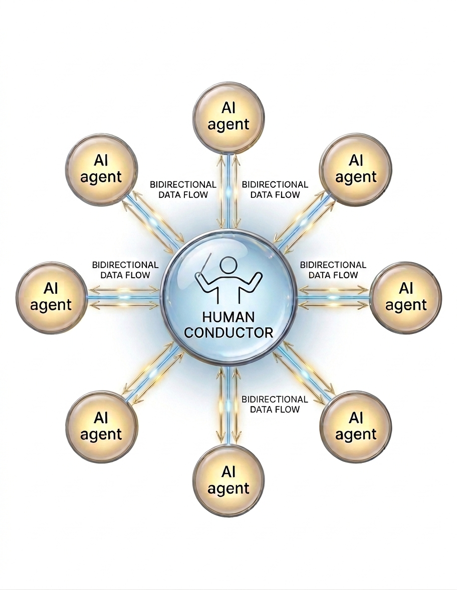

RZST
RZSTAI Methods Producer
Beyond the Prompt
What Is an AI Methods Producer? Generative AI has moved from a novelty to a ecomplex production‑grade tool. That gap between a single ai-agent's output and a global data unified data pipeline is where this role comes in.
Using an AI tool to make a single image is very different from running a global marketing campaign that generates thousands of on‑brand assets a day. This analogy is where the AI Methods Producer comes in.
This emerging role is one of the most critical in modern AI (llm) operations. An AI Methods Producer doesn’t just use AI—they build the methodologies, workflows, and infrastructure that let teams harness AI reliably, at scale, and with consistent quality.
In short: they are the architects of AI‑powered production.
The Role
What Does an AI Methods Producer Actually Do?
At its core, the role is a hybrid of creative producer, technical program manager, and systems architect. An AI Methods Producer designs the production engine—the repeatable process that turns a creative brief into finalized products using a combination of AI tools, autonomous agents, and human oversight.
“Think of the AI Methods Producer as a digital Ranch Foreman. They aren’t just ridin’ the AI; they’re buildin’ the whole ranch so the work gets done right, every single time, without the cattle wanderin’ off into the scrub.”
“The AI Methods Producer isn’t the one peelin’ the potatoes or flippin’ the steaks. They’re the one who designed the kitchen, decided which stoves to buy, and made sure the woodpile is high enough so the whole crew gets fed on time without the kitchen burnin’ down.”
- Design Multi‑Stage Workflows: They map out every step of production: from initial concept to final delivery. This includes deciding which AI tools are used, how they connect, and where human intervention is required.
- Select & Integrate Tools: With dozens of AI tools available (LLMs, image generators, video synthesis, voice cloning), the producer evaluates, tests, and integrates the right ones into a unified pipeline.
- Build Agent‑Based Systems: They often deploy “agents”—autonomous software routines that manage prompts, validate outputs, route assets, and handle exceptions—to make workflows scalable.
-
Cow-Dog Analogy
“These ‘Agents’ are like the cow‑dogs of the digital world. They handle the grunt work—herdin’ data, checkin’ for errors, and keepin’ the ‘AIs’ in line—so the human in charge can focus on the horizon instead of chasin’ every stray calf.”
Automatic Gate Analogy“Think of these ‘Agents’ like a series of automated gates in a corral. Instead of a man standin’ there swingin’ a gate shut, the system knows when a ‘steer’ (or a piece of data) is the right weight and color, and it clicks shut or opens up all by itself to keep the herd movin’ the right way.”
- Establish Quality & Governance: AI Methods Producers create prompt libraries, style guides, and QA checklists to ensure outputs meet brand standards. They also work with legal and brand teams to enforce responsible AI usage.
- Optimize & Scale: Once a workflow is built, they measure performance (speed, cost, quality) and iterate to improve efficiency. They also train creative teams to work within the new system.
The Process
From Chaos to Orchestration
The complexity of AI‑powered production is often underestimated. For example in the multimedia industry: A single deliverable—say, a 30‑second personalized video ad—may require:
- A large language model to generate script variants
- A text‑to‑image model to create backgrounds
- A voice synthesis AI for narration
- A video generation tool to combine elements
- A final rendering agent to apply branding
Each tool has its own interface, prompt style, and output quirks. Without a structured process, the result is chaos: inconsistent quality, wasted time, and an inability to scale.
“A messy AI process is like a gate left open during a dust storm. The AI Methods Producer builds the ‘chutes and pens’—a structured workflow where ideas go in raw and come out branded, polished, and ready for market.”
“An AI model is like a deep well. It’s got plenty of water down there, but it don’t do you no good unless you got the right pump, the right pipes, and a producer who knows how to turn the faucet so it don’t flood the garden or come out muddy.”
This is where the AI Methods Producer’s architecture comes in. The diagram below shows how they structure these elements into a controlled, repeatable machine.

Architecture
Breaking Down the Architecture
AI Nodes
Each “AI” in the diagram represents a specific model or service—a generative image model, a video synthesis tool, or an LLM. The producer selects and configures each one.
Agents as Controllers
Agents sit between the human and the AIs. They format prompts, validate outputs for brand compliance, retry failed generations, and pass data to the next step.
Bidirectional Data Flow
Command‑and‑feedback loops. An agent sends a prompt to an AI and receives results; the human conductor can intervene at these points to approve or refine.
The Human Conductor
Not a passive supervisor. The human conductor sets creative direction, makes high‑level decisions, and steps in when the automated system encounters ambiguity—without being bogged down in repetitive tasks.
Strategic Value
Why This Role Is Critical for Creative Organizations
AI Methods Producers bridge a gap that traditional roles can’t cover. A standard creative producer focuses on people, timelines, and budgets. A technical architect focuses on infrastructure. An AI Methods Producer does both—with a deep understanding of how creative work and AI systems intersect.
Without this role, companies often fall into one of two traps:
- Ad‑hoc use: Individual creatives experiment with AI, but outputs are inconsistent and can’t be scaled.
- Over‑automation: Teams try to replace humans entirely, leading to quality issues and brand risk.
The AI Methods Producer builds a human‑in‑the‑loop system that balances automation with creative control—exactly what the diagram’s “Human Conductor” represents.
“Automation without oversight is a runaway stagecoach. The AI Methods Producer ensures there’s always a hand on the reins, guidin’ the machine’s power with human intuition and common sense.”
“The AI system is the herd, and the agents are the cow dogs. But even the best dogs need a Trail Boss on a horse lookin’ at the horizon, seein’ the storm clouds comin’, and decidin’ if the herd needs to turn left or right. The machine can run, but only the human knows where we’re actually tryin’ to go.”
Qualifications
The Skills That Make an AI Methods Producer
This isn’t an entry‑level job. Most AI Methods Producers come from a background in creative production, marketing operations, or technical program management, and have added deep generative‑AI expertise.
| Skill Domain | Description |
|---|---|
| Production Experience | Excels at managing creative workflows (video, motion, design) |
| Generative AI Mastery | Expert‑level skills in software programming languages, the use of AI tools from code generators to other domains such as RunwayML, Adobe Firefly, and LLMs |
| Workflow Engineering | Ability to design, document, and optimize multi‑step processes |
| Cross‑Functional Collaboration | Working with creative, legal, IT, and brand teams |
| Tool Integration | Experience with APIs, automation platforms (e.g., Zapier, Make), and prompt engineering at scale |
The Future
AI Methods Producer as a Standard Role
As generative AI becomes embedded in every stage of content creation, the AI Methods Producer will become as common as a creative director or senior producer. Companies that invest in this role now will be the ones that can scale personalization, reduce production costs, and maintain brand integrity in an AI‑driven world.
For creative professionals, it represents a new career path—one that combines creative vision with systems thinking and technological fluency.
Ready to Build Your AI Production Engine?
If your organization is moving beyond AI experiments and into scaled production, the first step is to define the role of an AI Methods Producer—whether as a dedicated hire or as an evolved responsibility within your creative operations team.
Or reach us directly at contact@rzst.org